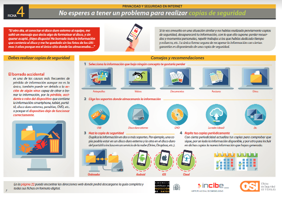
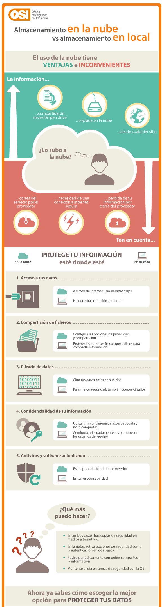

Tanto ordenadores personales como dispositivos móviles generalmente cuentan con información que nos gustaría conservar, fotos, vídeos, documentos, etc. Como hemos visto, los datos se pueden perder por diferentes causas como un error humano, avería del disco, extravío, robo o infección de malware.
La única forma de estar completamente seguros de que los datos no se perderán es crear copias de seguridad. Las copias de seguridad sirven para almacenar toda la información que consideramos importante y que nos gustaría mantener a toda costa.
Toda copia que se realice debe almacenarse en un soporte distinto a donde tengamos guardados los datos originales como puede ser un DVD, USB o la nube ya que en caso de pérdida o infección por malware la copia no se vería afectada.
Infografía: «No esperes a tener un problema para realizar copias de seguridad»

Para verlo mejor clica aquí.
Fuente: OSI-INCIBE
- ¿Cómo realizar copias de seguridad de sistemas operativos?
Existen multitud de herramientas con las que hacer copias de seguridad y todos los sistemas operativos más utilizados como Windows, MAC OS X, Android e iOS cuentan con las suyas propias. En los siguientes artículos puedes ver paso a paso cómo hacer copias en Windows, Android e iOS.
- ¿Copias de seguridad en soporte físico o en la nube?
Podemos elegir hacer un respaldo de nuestros archivos en soporte físico (USB, disco duro externo, DVD, etc.) o almacenarlas en algún servicio en la nube (Dropbox, Google Drive, iCloud, etc.).
¿Es mejor almacenar nuestra información en la nube o en un soporte físico? La respuesta no es clara, ya que la selección de una u otra alternativa dependerá de nuestras necesidades concretas y el tipo de información que queramos almacenar. Por ejemplo, podemos subir a la nube nuestras fotos de las vacaciones y decidir guardar en nuestro ordenador documentación.
Debemos tener en cuenta algunas consideraciones de seguridad. Por ejemplo, en el caso del almacenamiento en la nube, será nuestro proveedor del servicio el responsable de garantizar que sus servidores están actualizados y disponen de ciertas medidas de seguridad. Es decir, la seguridad de nuestra información dependerá en gran medida de las medidas que el proveedor establezca. Si almacenamos los datos en nuestro ordenador, debemos ser nosotros mismos quienes nos encarguemos de garantizar la seguridad.
Para ayudarte a decidir la mejor opción para almacenar tus datos de forma segura, en la siguiente infografía podrás comparar la seguridad del almacenamiento en la nube y la seguridad del almacenamiento en tu ordenador.
Infografía: «Almacenamiento en la nube Vs. Almacenamiento en local»

Fuente: OSI-INCIBE